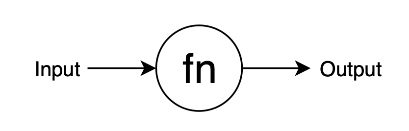
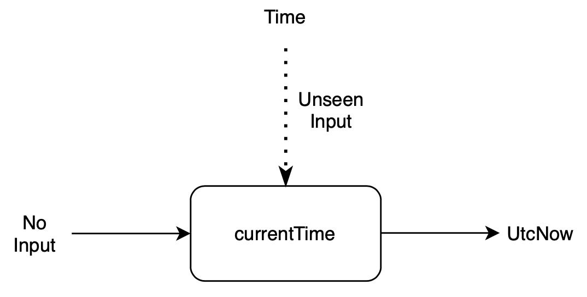
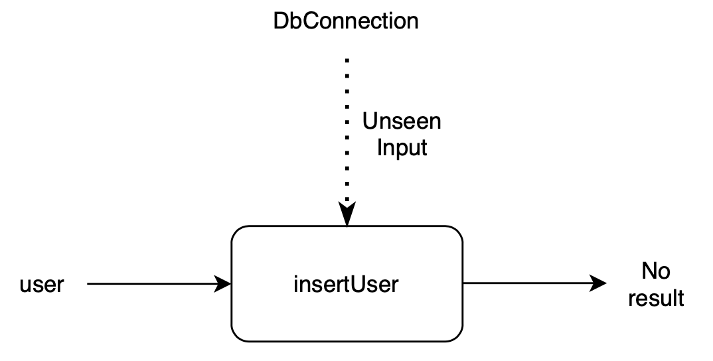
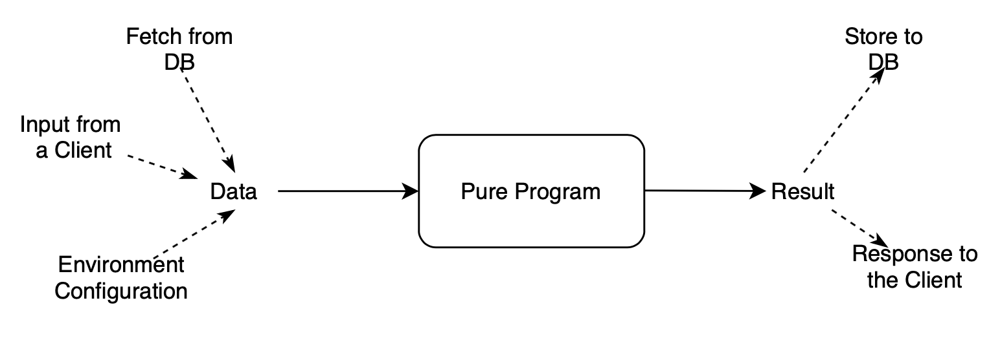

쿠키런 킹덤 서버 아키텍처 3
세번쨰 주제에서 함수형 프로그래밍에 대한 이야기가 눈에 띈다. 영상에서 소개되는 '프로그램'이라는 개념은 함수형 프로그래밍의 '순수 함수'라는 개념과 동일하다. 또한 Scala의 DSL 기능이 보이는데, 어떻게 작동하는지 다시 살펴보자. 기억이 가물가물하다.
Pure Function(순수 함수)

Figure 1: "pure function diagram"
함수가 순수하다는 말은 함수가 같은 입력에 대해서 항상 같은 결과값을 만들며, 부작용(side effect)이 없다는 뜻이다. 여기서 부작용이란 함수의 '보이지 않는 결과값'이라고 할 수 있는데, 함수 외부의 가변 변수를 수정한다든지, 시스템의 상태를 변경시킨다던지 하는 것들을 말한다. 순수 함수를 통해 우리는 함수가 오로지 입력과 결과값만을 통해 외부와 소통할 수 있음을 보장할 수 있다.
아주 단순한 예시를 들어서 순수 함수와 비순수 함수를 이해해보자.

Figure 2: "impure function"
// a와 b가 같다면 add a b의 값은 항상 같다 (순수 함수) let add a b = a + b // 5초마다 이 함수를 실행해본다고 생각해보자, 함수의 결과값이 항상 달라진다. // 흘러가고 있는 시간이 이 함수의 '보이지 않는 입력'이다. let currentTime () = System.DateTime.UtcNow
다른 예시를 들어보자.

Figure 3: impure function of connecting db
let insertUser user =
// DbConnection can fail
use db = DbConnection ()
// Insert also can fail
db.insertInto("users").values([user]).execute()
insertUser=는 순수하지 않은 함수다. 우선, =db 값을 보자. 외부에서
가져와 입력으로 받은 값이 아닌, 함수 내부에서 생성된 값이다.
데이터베이스와 연결에 문제가 생길 경우 함수가 어떤 행동을 할지 보장할 수
없다. 또한 함수가 하는 일 또한 함수 외부에 있는 데이터베이스의 상태를
변경시키는 일이다. 함수의 보이지 않는 출력이다.
이런 식으로 함수가 비순수해지면, 함수가 어떤 결과를 가져올지 쉽게 예측할 수 없다. 소프트웨어의 구조를 쉽게 이해할 수 없다는 뜻이다. 또한 객체와 객체 사이, 함수와 함수 사이에 의존성이 크게 증가한다. 따라서 소프트웨어를 쉽게 변경할 수 없다. 순수함수를 이용하면 함수가 서로 입력과 결과값으로만 외부와 소통할 수 있기 때문에 프로그램의 흐름이 명확해진다는 장점이 있다.
여기서 한가지 질문을 할 수 있다. 순수함수를 통해 명확한 프로그램을 작성하면 정말 좋은 일일텐데. 데이터베이스에 연결하는 것도 순수하지 않은 일이고, 유저에게 입력을 받는 것도 순수하지 않는 일인데 순수함수로만 프로그램을 어떻게 구성한다는 말일까?
사실 그런 일은 가능하지 않다. 애당초 순수하지 않은 것을 순수하게 만드는 것이 말이 안된다. 순수함수로 구현하는 것은 사실 위에서 든 예시와 같이 데이터베이스, 유저 입력 관리가 아니라 프로그램의 핵심 로직이다. 프로그램의 핵심 로직에 필요한 입력을 비순수 함수로부터 가져와서 입력하고, 핵심 로직을 통해 얻은 결과값을 비순수 함수를 통해 저장하는 것과 같은 일을 하는 것이다.

Figure 4: "pure program does not have a side effect"
순수 함수를 이용하는 이유는 이렇게 프로그램의 핵심 로직을 비순수한 외부 시스템으로부터 격리시키고 수정가능하게 만드는 데에 있다. 영상에서 나오듯이 프로그램의 핵심 로직과 외부 시스템에 의존관계가 강하지 않다보니 소프트웨어를 보다 유연하고 자유롭게 수정할 수 있다.
DSL(Domain Specific Language)
영상에서 쿠키런 개발팀이 Scala의 for comprehension를 이용해 콘텐츠 로직을 작성하는 장면이 나온다. 영상의 설명에 따르면 이 기능을 통해 콘텐츠 로직을 작성하기 위한 DSL을 이용하고 있다고 한다.
DSL이란 Domain Specific Language 즉, 특정 도메인의 문제를 해결하기 위해 고안된 언어라는 뜻이다. 프로그래밍으로 해결 가능한 모든 문제를 해결할 수 있는 General Purpose Language 와는 다른 측면이 있다.
DSL의 예는 다음과 같다.
- 웹 어플리케이션의 프론트엔드를 구현하기 위해 설계된 HTML, CSS
- 데이터베이스 사용을 위해 설계된 SQL
- C 언어로 작성된 프로그램을 빌드하기 위한 makefile
- 인프라스트럭처 관리를 위한 Terraform
DSL을 사용하면 다음과 같은 장점이 있다.
- 특정 도메인의 문제를 정교하게 표현할 수 있으며,
- 특정 도메인의 문제를 해결하고 목적을 달성하기 위한 규칙 등을 기술할 수 있다.
Scala's for comprehension
쿠키런 개발팀이 사용중인 Scala의 for comprehension을 어떻게 DSL 구현에
사용할 수 있는지 살펴보자. Scala의 for comprehension을 사용하기 위해서는
사용하고자 하는 타입이 map=과 =flatMap 함수를 구현하고 있어야 한다.
(=forEach=와 =withFilter=도 구현해야 하지만 설명을 짧게 하고 넘어가기
위해 생략한다.) =map=과 =flatMap=을 이해해보자. 이 함수들은 wrapping
type에 대해서 구현된다. 스칼라 문법에 익숙치 않아서 F#으로 작성한다.
Wrapping type 이란 말 그대로 어떤 타입을 감싸는 타입이다. 예를 들어보면 =List=나 =Set=처럼 여러 값의 콜렉션이 될 수도 있고, =Option=이나 =Result=처럼 하나의 값을 감싸는 타입일 수도 있다. 결국 =T=라는 타입을 감싸서 =Wrap<T>=와 같은 구조가 되면 된다.
- =int=를 =List=로 감싸면 =List<int>=가 된다. (list of integers)
- =float=을 =Set=으로 감싸면 =Set<float>=가 된다. (set of floating numbers)
- =char=를 =Option=으로 감싸면 =Option<char>=가 된다.
HttpResponse=를 =Result=로 =Result<HttpResponse, HttpError>처럼 감쌀 수 있다.
=map=은 두 타입 =T, U=에 대해서 =Wrap<T>=을 입력으로 받아 =Wrap<U>=을 내보내는 함수다. 그리고 =flatMap=은 =T, U=에 대해서 =Wrap<Wrap<T>>=을 입력으로 받아 =Wrap<U>=을 내보내는 함수다.
val map: ('T -> 'U) -> Wrap<'T> -> Wrap<'U>
val flatMap: (Wrap<'T> -> Wrap<'U>) -> Wrap<Wrap<'T>> -> Wrap<'U>
// 좀 더 일반적이고 간결하게 ('T -> Wrap<'U>) -> 'T -> Wrap<'U> 로 쓸 수도 있다. ('T를 Wrap<'T>로 치환하면 동등하다)
정의만 보면 이해가 힘드니 예시를 들어보자. list of floats를 list of int로 map하는 예다.
let floats = [1.5; 2.3; 9.7; 6.4] floats |> List.map (fun r -> int r) // returns [1; 2; 9; 6]
다음은 list of (list of floats)를 list of int로 flatMap(collect)하는 예다.
let floats = [[1.5; 2.3]; [9.7; 6.4]] floats |> List.collect (fun xs -> xs |> List.map int) // returns [1; 2; 9; 6]
왜 =map=과 =flatMap=을 구현해야 하는걸까? Scala의 for comprehension 코드를 보면 이유를 알 수 있다.
for {
i <- numbers1
j <- numbers2
} yield max(i, j)
위의 코드는 아래로 번역된다.
numbers1.flatMap(i => numbers2.map(j => max(i, j)))
=map=과 =flatMap=을 구현한다면, =numbers3=처럼 enumerator를 더 많이 for comprehension에 넣어도 valid한 코드가 된다.
for {
i <- numbers1
j <- numbers2
k <- numbers3
} yield max(i, j, k)
numbers1.flatMap(i => numbers2.flatMap(j => numbers3.map(j => max(i, j, k))))
=forEach=와 =withFilter=도 구현하면 enumerator에 대해서 사이드 이펙트와, enumerator의 값을 골라내는 기능을 구현할 수도 있다. =map=과 =flatMap=을 이용해 for comprehension을 enumerator가 아니라 다른 분야에도 사용할 수 있는데 다음 자료를 참고해보자.
- https://1ambda.github.io/scala/reactive-programming-1/#for-expression
- https://www.coursera.org/learn/scala-functional-programming (강추)
결론적으로 다음과 같은 DSL를 작성할 수 있게 되는 것이다. (영상 내용에서 발췌)
for {
quest <- getNormalQuest(questId)
questData <- inquireQuest(quest.dataId)
_ <- assertQuestClearable(quest).unlessA(ignoreRequirements)
payments <- pay(questData.payments)
rewards <- receive(questData.rewards, CurrencyInfo.free, InventoryPolicy.Ignore)
_ <- liftEvent(QuestCleared(questId, quest.dataId))
} yield ClearQuestResult(questId, rewards, payments)
questId=를 통해 =quest 데이터를 가져오고 이를 통해 quest=가
클리어가능한지, 지불내용과 보상내용 등을 확인하고 그 결과를
만들어낸다.(라고 추정한다) 이런식으로 for comprehension을 활용하면
=quest 뿐만 아니라 게임을 구성하는 데이터를 이용해 로직을 작성하는 게
간결해진다.
F#'s computation expression
영상의 내용에는 나오지 않았지만 F#의 computation expression을 이용하면 좀 더 expressive한 DSL을 구현할 수 있다. 글이 길어지니 참고 자료만 남기고 나중에 정리해야겠다.
- The “F# Computation Expression” series: https://fsharpforfunandprofit.com/series/computation-expressions/
- F# Computation Expression으로 Lego Mindstorm DSL 구현하기: https://thinkbeforecoding.com/post/2020/12/03/applicative-computation-expressions-3